시작하기
TapeDesk는 트랙이 네 개에서 여섯 개인 테이프 레코더에 사운드 엔진을 더한 앱으로, iPhone과 iPad에서 씁니다. 처음이라면 여기서부터 읽으세요.
필요한 것
iOS 17 이상이 설치된 iPhone이나 iPad가 필요합니다. iPhone에서는 세로로, iPad에서는 어느 방향으로든 쓸 수 있습니다. 기기에 내장된 마이크로도, USB 오디오 인터페이스로도 녹음할 수 있습니다. 계정이나 가입은 필요 없습니다.
앱을 처음 열면 120 BPM으로 네 트랙을 녹음해 둔 예제 테이프 demo가 불러와집니다. 다른 테이프처럼 고쳐도 되고 지워도 됩니다.
앱은 녹음에 쓰는 마이크, Link로 다른 앱을 찾는 데 쓰는 로컬 네트워크, MIDI 컨트롤러를 연결하는 데 쓰는 Bluetooth, 이렇게 세 가지 권한을 요청합니다. 데이터는 하나도 수집하지 않습니다.
두 가지 모드
설정 ▸ 앱 ▸ 모드에서 레코더나 그루브박스를 고릅니다. 레코더에서는 테이프와 믹스를 씁니다. 그루브박스에는 여기에 신스와 트랙 화면이 더해지고, 이 화면에서 연주와 녹음을 한 번에 합니다. 모드를 바꿔도 테이프는 그대로입니다.
모드 줄.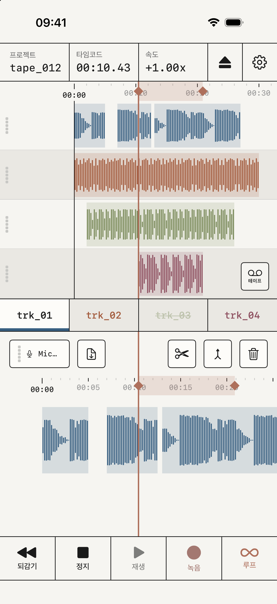
레코더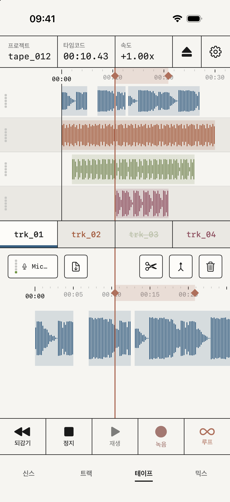
그루브박스화면
테이프 화면은 위에서부터 헤더, 테이프 전체, 크게 보이는 녹음 대기 트랙, 트랜스포트 순서로 되어 있습니다.
헤더에서 프로젝트는 테이프 목록을, 꺼내기 아이콘은 내보내기를, 톱니바퀴는 설정을 엽니다.
맨 아래 줄에서 네 화면 신스 · 트랙 · 테이프 · 믹스로 이동합니다.
화면 전환 줄은 없습니다. 테이프와 믹스는 메트로놈 아래, 모서리에 있는 전환 버튼으로 오갑니다.
프로젝트, 타임코드, 속도가 있는 헤더.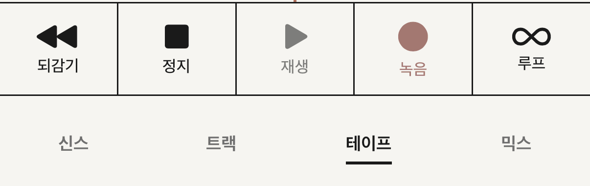
첫 테이크
- 트랙 탭을 눌러 녹음 대기 상태로 만듭니다.
녹음을 누릅니다. 테이프가 멈춰 있으면 먼저 카운트가 울립니다.- 다 끝나면
정지를 누릅니다. 되감기로 처음으로 돌아가고재생으로 들어 봅니다.
이제 테이크가 하나 생겼습니다. 나머지는 필요할 때 하나씩 익히면 됩니다.
녹음
녹음 대기와 녹음
트랙 탭을 누르면 녹음 대기 상태가 됩니다. 트랙마다 색이 있고, 소스가 켜져 있지 않으면 녹음 대기 중인 트랙만 녹음됩니다.
녹음으로 녹음하고 정지로 멈춥니다. 테이프가 멈춰 있으면 박자표에 맞춘 카운트가 먼저 울립니다. 카운트는 설정 ▸ 테이프의 카운트인에서 끌 수 있습니다.
테이크 위에 녹음하면 두 소리가 합쳐져 함께 들립니다. 이것이 기본값인 더빙입니다. 그 구간을 새 테이크로 바꾸려면 같은 설정에서 녹음 모드를 교체로 둡니다.
음이 걸려서 계속 울리면 정지를 두 번 누르세요. 첫 번째에 테이프가 멈추고, 두 번째에 아직 울리는 소리가 모두 끊깁니다.
더빙은 두 테이크를 합치고 교체는 그 구간을 바꿉니다.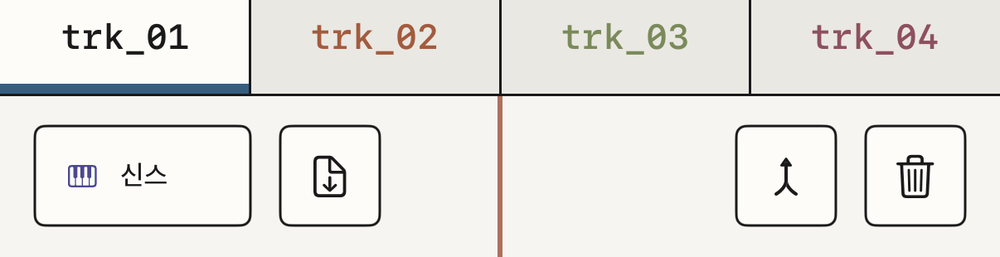
저절로 시작하는 테이크
녹음을 길게 누르면 −60에서 0 dB까지의 임계값 페이더가 나타납니다. 입력이 그 값을 넘으면 테이크가 저절로 시작되므로, 혼자 녹음하는데 휴대폰이 손에 닿지 않을 때 쓸모가 있습니다.
녹음을 누르고 있다가 손뼉을 치면 테이크가 저절로 시작됩니다.트랙
테이프 하나에는 트랙이 네 개에서 여섯 개까지 있습니다. iPhone에서는 네 개, iPad에서는 여섯 개로 시작하고, 설정 ▸ 테이프의 트랙에서 바꿉니다. 트랙마다 리전을 128개까지 넣을 수 있고, 테이프 길이는 10분입니다.
트랙 수를 줄여서 테이크가 있는 트랙이 빠지게 되면, 같은 숫자를 두 번 눌러 확인합니다. 그러면 트랙 아래에 실행 취소가 나타나고, 그 트랙을 통째로 되돌릴 수 있습니다.
라이브 루퍼
루프가 켜져 있으면 녹음은 울리는 소리를 지우지 않고, 그 위에 한 바퀴마다 한 겹씩 녹음합니다. 정지를 누르면 모든 겹이 루프 하나로 합쳐집니다.
임계값도 여기서 씁니다. 녹음을 길게 누르고 페이더를 원하는 곳에 두면, 첫 타격과 함께 새 겹이 시작됩니다. 임계값을 넘기 직전에 연주한 부분도 남습니다.
소스가 켜져 있으면 한 바퀴마다 그리드의 모든 트랙이 녹음됩니다. 여러 입력을 한 번에 녹음하기를 보세요.
여러 입력을 한 번에 녹음하기
한 번의 녹음에서 트랙마다 자기 소스를 녹음할 수 있습니다. 소스는 신스, 휴대폰 마이크, USB 오디오 인터페이스의 아무 채널이나 될 수 있어서, 인터페이스가 없어도 한 트랙에는 신스, 다른 트랙에는 목소리, 이렇게 두 가지가 있습니다.
입력 버튼을 눌러 모니터 패널을 열고, 소스 줄의 마지막 키인 소스를 누르면 소스 → 트랙 그리드가 열립니다. 트랙을 누른 다음, 그 트랙에 녹음할 소스를 누릅니다. 녹음을 누르면 소스가 있는 트랙이 모두 한꺼번에 녹음되고, 정지를 누르면 트랙마다 자기 리전이 남습니다. 루프와 임계값에서도 똑같이 동작합니다.
- 인터페이스의 한 채널을 여러 트랙에 보낼 수 있고, 한 트랙이 여러 채널을 받을 수도 있습니다.
- 신스는 한 트랙에만 들어갑니다. 다른 트랙에 놓으면 그쪽으로 옮겨 갑니다.
- 한 트랙은 신스나 입력 가운데 하나만 녹음하고, 둘을 함께 녹음하지는 않습니다.
- 녹음 대기 중인 탭을 한 번 더 누르면 그 트랙은
safe가 됩니다. 소스는 계속 보이지만 다음 녹음에서는 녹음되지 않습니다. - 인터페이스 채널은 게인 변화 없이 그대로 들어오므로, 레벨은 인터페이스에서 맞춥니다.
- 신스와 목소리를 함께 녹음할 때는 유선 이어폰으로 들으세요. 오디오가 들어오는 곳을 보세요.
그리드는 테이프와 함께 저장되고, 같은 입력을 연결한 채로 테이프를 열면 다시 나타납니다. 소스 하나만 녹음하려면 같은 줄에서 신스나 입력을 누릅니다.
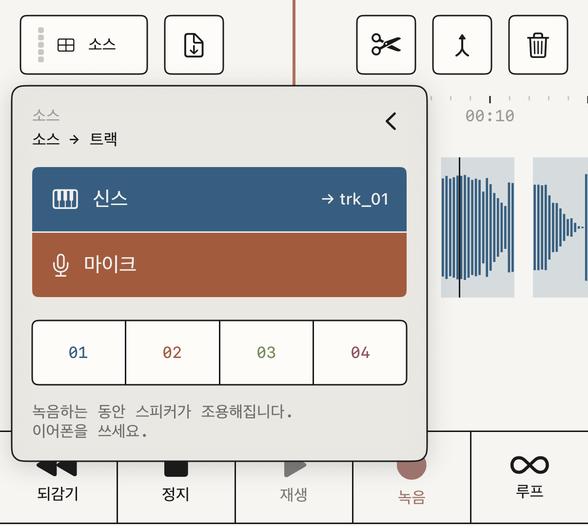
trk_01, 마이크는 trk_02에 있습니다.신스 녹음하기 그루브박스
신스는 트랙 화면에서 연주하고 녹음합니다. 위에는 트랙 탭, 아래에는 건반, 가운데에는 녹음 대기 트랙의 테이크가 있습니다.
녹음이 무엇을 녹음할지는 화면에 따라 정해집니다. 신스와 트랙에서는 신스를, 테이프와 믹스에서는 입력을 녹음합니다. 어느 화면에서든 모니터 패널의 소스 줄에 있는 신스나 입력으로 바꿀 수 있어서, 예를 들어 MIDI 키보드를 치면서 테이프 화면에서 신스를 녹음할 수 있습니다. 입력 버튼은 녹음이 무엇을 녹음할지 늘 보여 줍니다. 신스라는 글자가 나오거나, 장치 이름과 레벨 미터가 나옵니다.
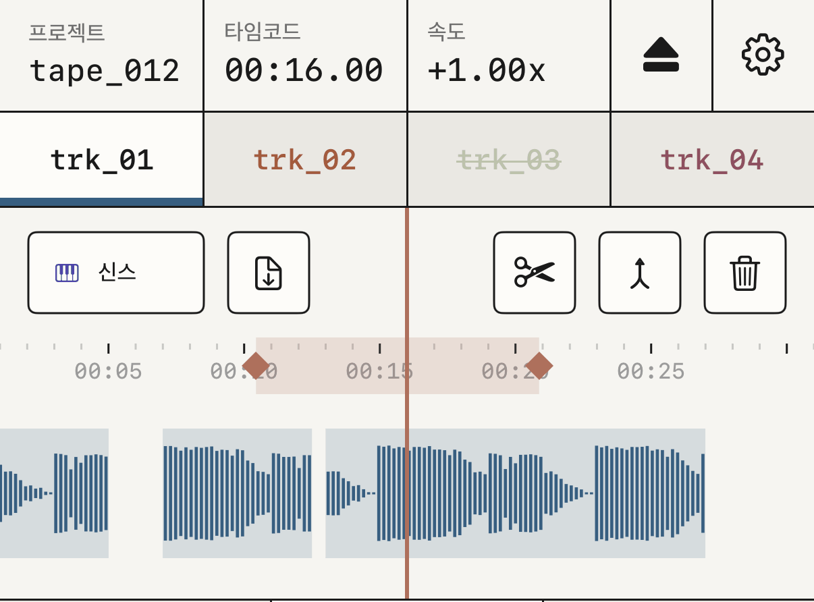
트랙 화면. 녹음 대기 중인 탭과 테이크가 크게 보입니다.소스 줄을 입력에서 신스로 바꾸기.오디오가 들어오는 곳
입력은 iOS가 고릅니다. 인터페이스를 연결하기 전까지는 기기의 마이크, 연결한 뒤로는 인터페이스입니다.
Bluetooth로는 들리는 소리가 200 ms쯤 늦게 도착해서, 그 소리에 맞춰 녹음한 테이크는 박자를 맞출 수 없습니다. 녹음할 때는 유선 이어폰으로 들으세요.
휴대폰 마이크로 녹음하면서 스피커로 들으면, 재생 중인 소리가 마이크에 들어가지 않도록 녹음하는 동안 출력이 꺼집니다. 이어폰을 쓰면 모든 소리가 들립니다.
녹음 도중 앱이 꺼지면 다음에 열 때 그 테이크를 복구할지 물어봅니다. 전화나 Siri가 오면 엔진이 멈추고, 테이크는 그 지점까지 저장됩니다.
속도와 루프
속도
헤더의 속도를 누르면 세로 페이더가 열립니다. 가운데가 1.00x, 위 끝이 2.00x, 아래 끝이 0.25x입니다. 테이프 데크처럼 음정이 속도를 따라 오르내립니다.
페이더 아래의 자물쇠가 손을 뗐을 때의 동작을 정합니다. 열려 있으면 속도가 1x로 돌아가고, 잠겨 있으면 둔 자리에 머물고 테이프와 함께 저장됩니다.
다른 속도로 녹음한 테이크는 재생할 때도 그 속도를 유지합니다.
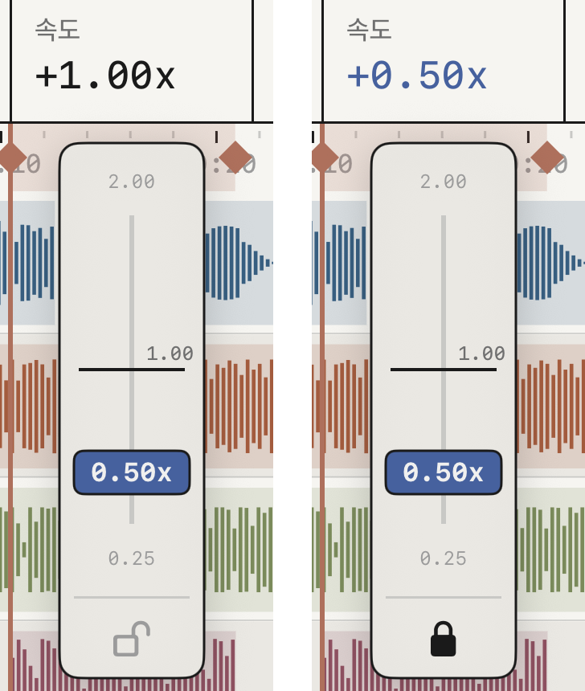
테이프 안에서 움직이기
되감기는 처음으로 돌아갑니다. 재생을 누르고 있는 동안에는 되감기가 빨리 감기가 됩니다.
녹음 대기 트랙을 끌면 헤드가 움직입니다. 테이프가 멈춰 있을 때는 바이닐처럼 손가락을 따라오고, 재생 중일 때는 끄는 속도에 따라 음정이 바뀝니다.
끄는 동안 눈금 하나마다 약한 진동이 오고, 번호가 붙은 마디, 녹음 대기 트랙의 리전 경계, 루프의 양 끝에서는 조금 더 강한 진동이 옵니다.
루프
눈금자의 손잡이를 끌어 루프의 시작과 끝을 정합니다. 테이프 전체 길이까지 늘릴 수 있습니다. 이음매에는 짧은 페이드가 들어갑니다.
리전을 선택해 둔 상태라면 편집 바의 루프가 루프를 그 리전에 맞춥니다.
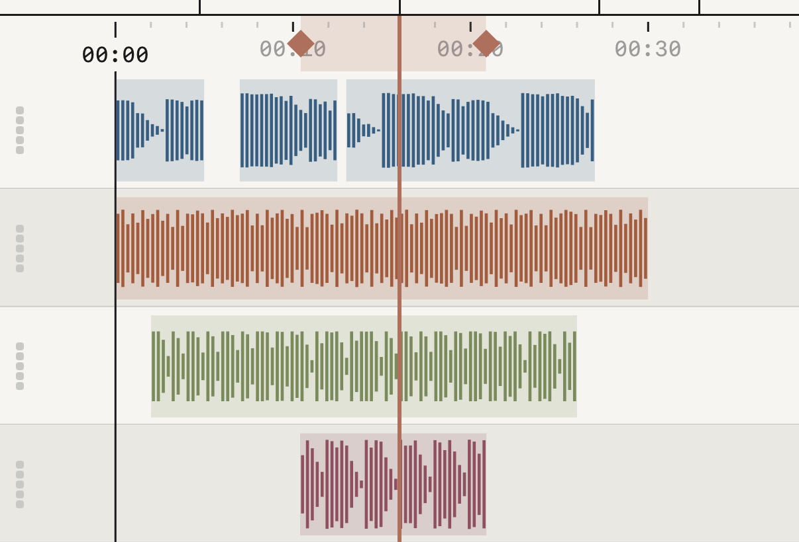
편집
녹음한 테이크 하나하나가 리전입니다.
트랙 도구
트랙 탭 아래 줄에 도구가 네 개 있습니다.
- 입력 버튼은 모니터 패널을 엽니다.
- 문서 아이콘은 오디오 파일을 트랙으로 가져옵니다.
- 가위는 헤드 위치에서 리전을 자릅니다.
- 휴지통은 녹음 대기 트랙을 비웁니다.
실행취소로 되돌릴 수 있습니다.
두 트랙을 하나로 바운스
바운스는 두 트랙을 하나로 합쳐 트랙 하나를 비워 줍니다. 기본값인 프린트에서는 원래 트랙의 페이더, 팬, 센드 두 개가 오디오에 새겨지고, 두 번 적용되지 않도록 그 컨트롤들은 중립 위치로 돌아갑니다.
신스 그루브박스
신스에는 합성 엔진 11개와 샘플러, 드럼 킷이 있습니다. 건반, 코드, 시퀀서로 연주합니다.
소리 고르기
위쪽의 엔진과 프리셋 이름이 적힌 칸을 누르면 브라우저가 열리고, 왼쪽에 엔진, 오른쪽에 그 엔진의 프리셋이 나옵니다. 위에는 세 패밀리 신스 · 샘플러 · au와 별 모양의 소리별이 있습니다. 소리별은 소리를 악기별로 묶고, 즐겨찾기와 내 폴더도 여기에 보관합니다.
프리셋을 누르면 바로 불러오고, 브라우저는 열린 채로 있습니다. 두 번 누르면 불러오고 닫힙니다. 저장하지 않은 샘플 소리가 사라지게 될 때는 먼저 물어봅니다.
저장은 지금 소리를 새 프리셋으로 저장합니다. 내가 만든 프리셋을 길게 누르면 이름 변경, 잘라내기, 삭제를 할 수 있습니다. 별을 누르면 즐겨찾기가 됩니다. 이름 옆의 점은 소리를 바꾸고 아직 저장하지 않았다는 표시입니다.
트랙별 소리
어떤 프리셋으로 트랙을 녹음했는지 기억나지 않아도 테이프는 알고 있습니다. 신스를 트랙에 녹음할 때마다 테이프가 그때 울리던 소리를 저장해 둡니다.
그 소리는 소리별에 있는 테이프 이름의 폴더에 트랙마다 한 줄씩 있습니다. 그 트랙에 다시 녹음하면 새 소리로 바뀝니다.
이 소리들은 그 테이프의 것이어서, 다른 테이프에는 나오지 않고 테이프를 지우면 함께 지워집니다. 남겨 두려면 불러온 다음 프리셋으로 저장하세요.
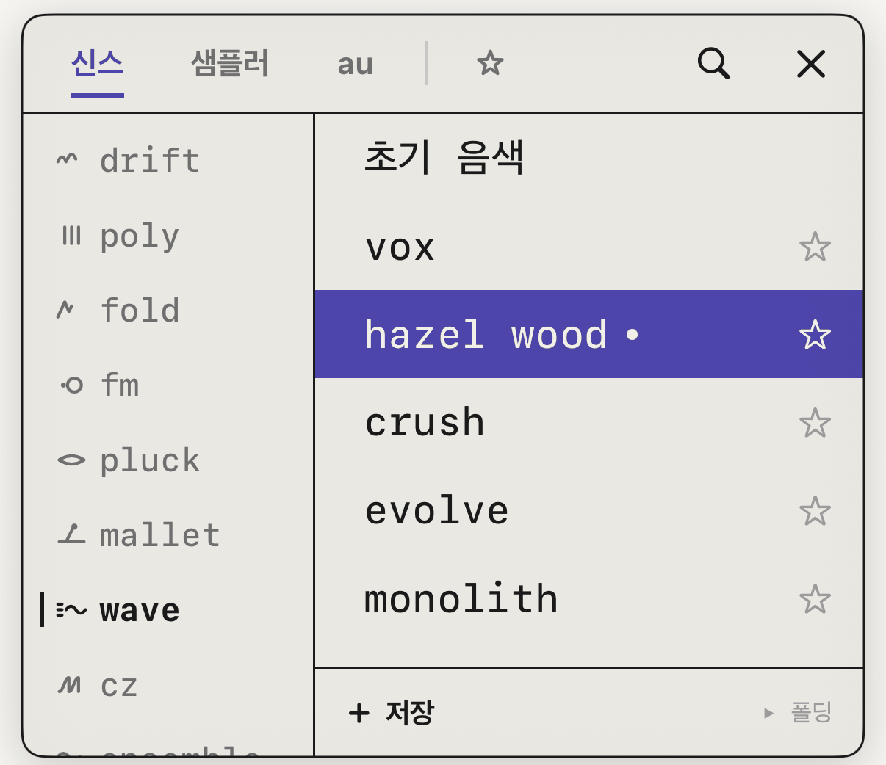
소리 다듬기
소리 이름 아래에 탭이 다섯 개 있고, 탭마다 노브가 두 줄 있습니다.
신스의 윗줄은 엔진의 매크로 네 개이고, 아랫줄은보이스(폴리·모노·레가토),글라이드,레벨입니다.엔벨로프는 음량 엔벨로프와 필터 엔벨로프 두 개를 그립니다.필터는 컷오프와 레조넌스를 곡선 하나로 보여 주고, 필터 종류와 엔벨로프가 필터를 얼마나 움직일지를 정합니다.변조에는 LFO가 두 개 있습니다.대상을 누른 다음 움직일 노브를 누릅니다. 연결을 풀려면대상을 길게 누릅니다.이펙트는 엔진 자체의 이펙트로, 믹스의 이펙트와는 따로 있습니다.
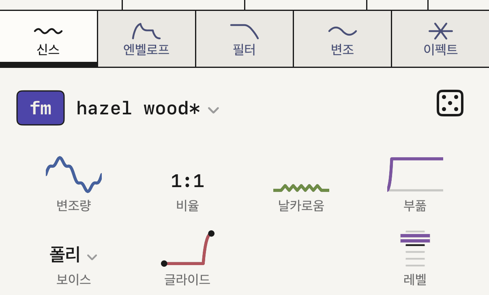
신스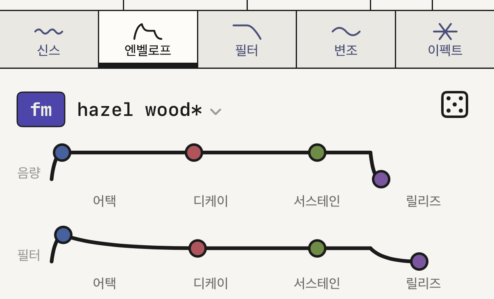
엔벨로프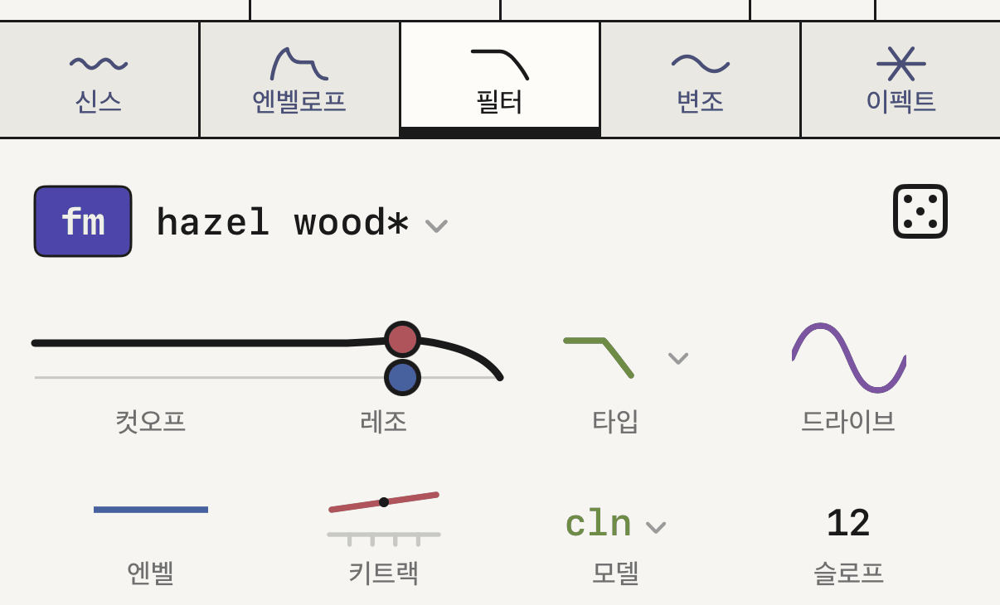
필터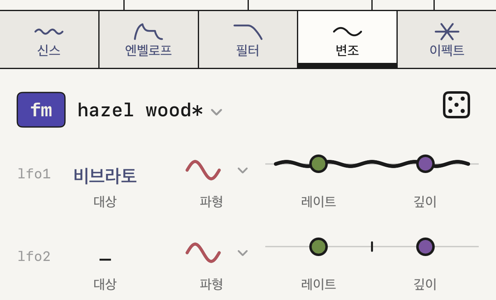
변조건반
건반은 지금 고른 스케일의 음만 냅니다. 스케일은 바로 위의 루트와 스케일에서 고릅니다. 기본 스케일이 14개 있고, 스케일 메뉴에서 나만의 스케일을 만들 수 있습니다. −와 +로 옥타브를 바꿉니다.
음의 세기는 손가락을 얼마나 세게 누르는지와 휴대폰이 감지한 타격으로 정해지고, Apple Pencil에서는 필압으로 정해집니다. 모든 음을 같은 세기로 내려면 앱 설정에서 벨로시티를 0으로 둡니다.
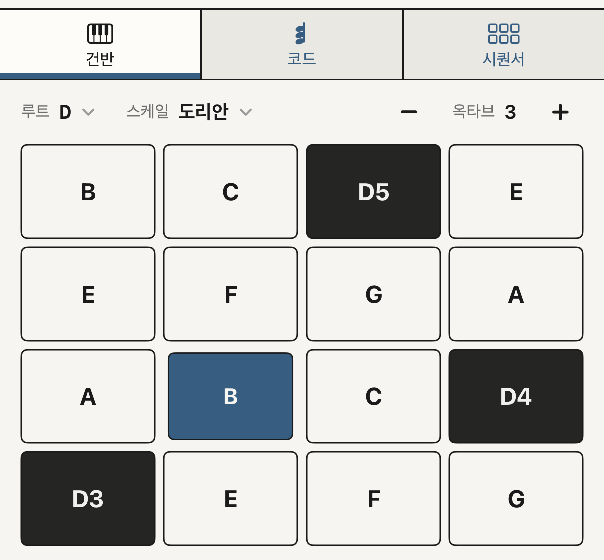
건반.코드
코드는 패드마다 코드를 하나씩 놓고, 모드는 두 가지입니다.
스케일에는 패드가 여덟 개 있고, 스케일의 각 음도에 하나씩 대응합니다. 7, 9, sus 같은 모디파이어를 누른 채로 패드를 누르면 그 패드의 코드가 바뀝니다. 패드를 누르지 않고 모디파이어만 눌렀다 떼면, 다시 누를 때까지 켜진 채로 남습니다.
코드는 밀집 배치로, 음들이 건반 한가운데에 모이고 베이스 없이 울립니다. −와 +로 더 낮게 또는 더 높게 옮깁니다.
사용자에서는 여덟 패드짜리 뱅크 두 개에 코드를 직접 만듭니다. 편집이나 빈 패드를 누릅니다. 건반에서 치는 음이 하나씩 코드에 더해지고, 여덟 음까지 들어갑니다. 다 되면 저장을 누릅니다.
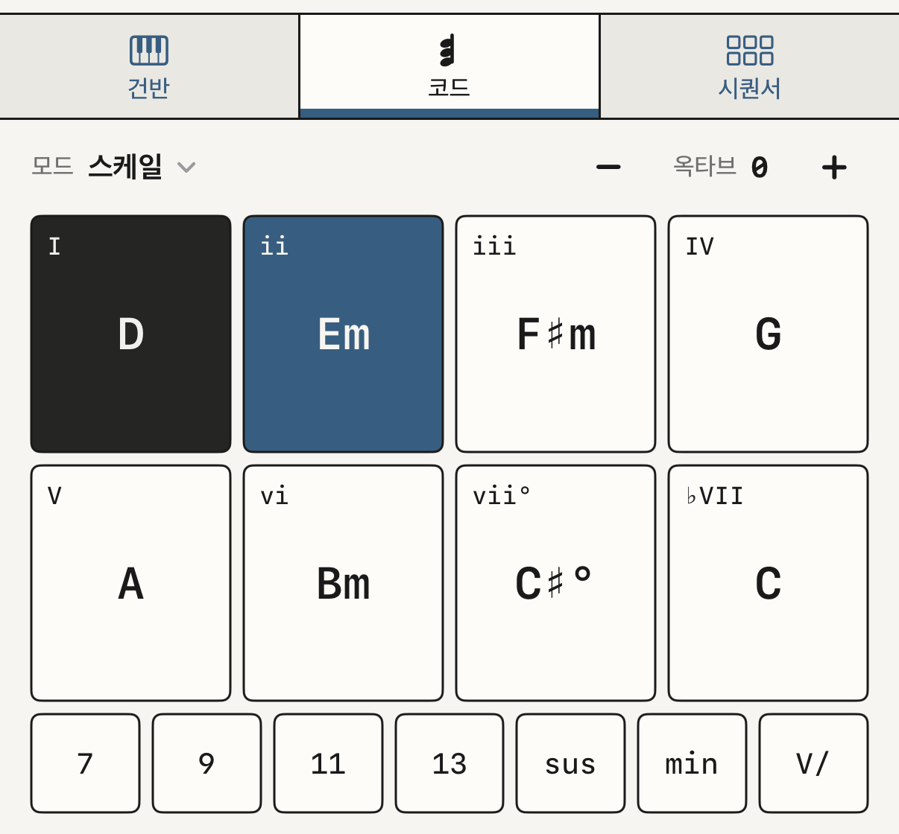
스케일 모드의 코드와 모디파이어 줄.시퀀서
시퀀서에는 다섯 가지 상태 오프 · 아르페지 · 스텝 · 핑 · 유칼립투스가 있고, 왼쪽 위의 이름을 눌러 고릅니다.
아르페지는건반이나코드에서 누르고 있는 음을 16스텝 링 위에서 아르페지오로 연주합니다.스텝은 최대 64스텝의 시퀀서이고, 16스텝씩 페이지로 나뉩니다. 스텝을 누르면 그 스텝으로 가서 입력합니다. 두 번 누르면 지워집니다.핑은 종이 놓인 당구대입니다. 한 번 누르면 종이 놓이고, 끌면 공이 굴러갑니다. 공이 지나가는 종마다 소리가 납니다. 조심하세요, 빠져듭니다.유칼립투스는 바로 아래에서 따로 설명합니다.
오프로 두어도 쓰던 내용은 다시 돌아올 때를 위해 남아 있습니다.
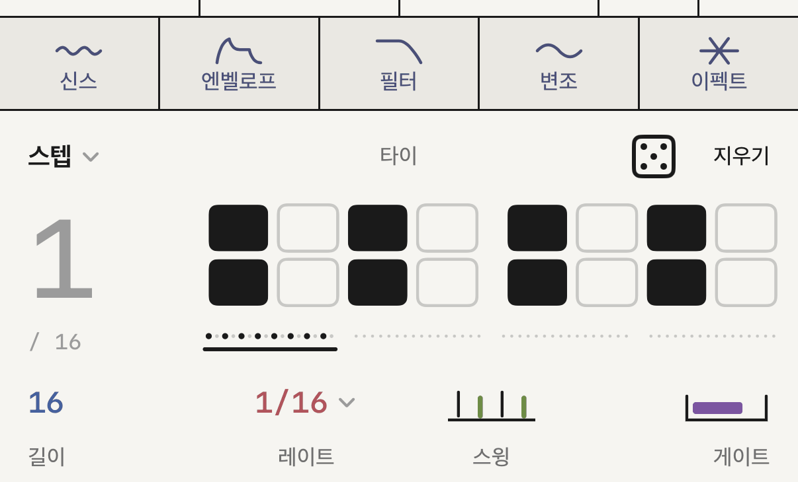
스텝.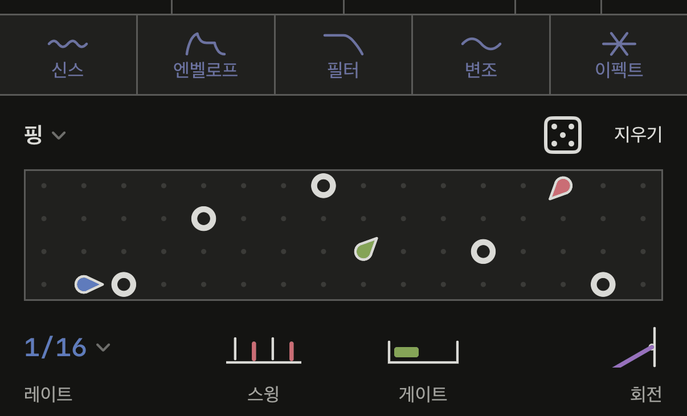
핑.유칼립투스
유칼립투스는 Koala Sampler의 시퀀서에서 영감을 받은, 반복되는 피아노 롤입니다. 연주하거나 노트를 그려서 채우고, 마음에 들면 테이프에 프린트합니다.
롤 아래에 키가 네 개 있습니다.
재생은 롤을 돌립니다.녹음은건반,코드,kit에서 연주한 것을 롤에 기록하고, 한 바퀴마다 더 쌓습니다.길이는 몇 마디인지를 테이프의 박자표로 정합니다.프린트는 롤을 테이프에 녹음합니다.
롤을 누르면 크게 열립니다. 위에는 루프, 스냅, 양자화가, 아래에는 펜, 세기, 확률, 실행취소가 있습니다. 펜은 노트를 그리고, 세기와 확률은 노트마다 세기와 확률을 정합니다. 두 손가락을 벌려 확대하고, []를 누르면 다시 전체가 보입니다.
프린트는 헤드에서 가장 가까운 마디선부터 정확히 한 바퀴를 녹음 대기 트랙에 녹음합니다. 테이프는 멈춰 있어야 합니다. 두 번 연달아 프린트하면 두 번째가 첫 번째 바로 뒤에 붙습니다.
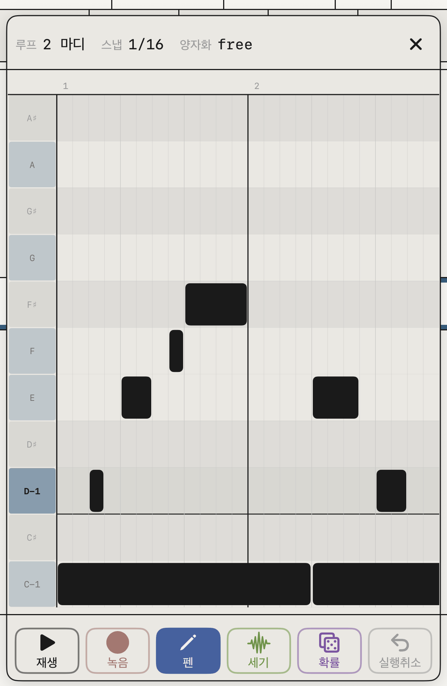
유칼립투스. 위에 루프, 스냅, 양자화.Kit
kit는 패드 24개가 두 뱅크 A와 B에 나뉜 드럼 킷입니다. 패드를 누르면 선택되고, 위쪽에 그 소리가 입력 · 게이트 · 정규화 · 역재생 · 자르기와 함께 열립니다.
빈 패드를 누르면 내 소리 폴더, 파일(오디오나 동영상), 마이크, 테이프의 트랙에서 소리를 불러올 수 있습니다.
찹은 표시한 지점마다 소리를 잘라 빈 패드에 나눠 담습니다. 소리가 재생되는 동안 패드를 눌러 자를 지점을 표시할 수도 있습니다. 정규화는 소리의 음량을 피크까지 올립니다.
패드를 비우려면 입력을 열고 지우기를 누릅니다. 실행취소로 되돌릴 수 있습니다. 라이브러리에서 소리를 지우면 그 소리를 쓰는 패드와 프리셋까지, 모든 곳에서 사라집니다.
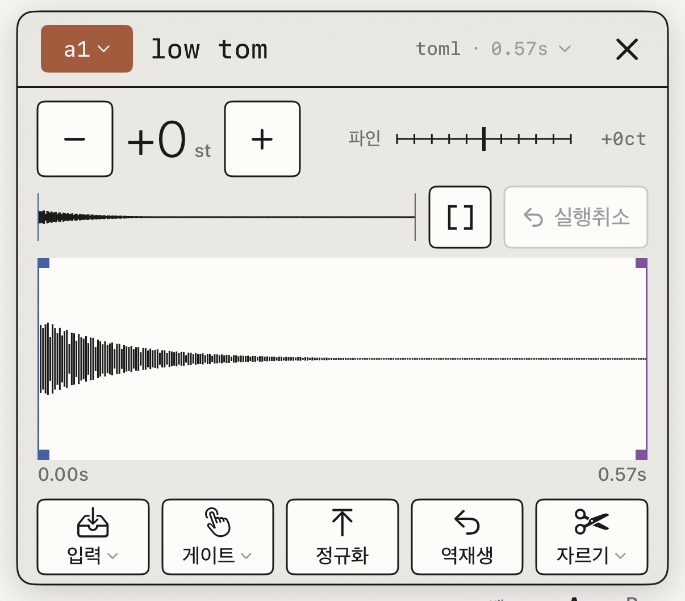
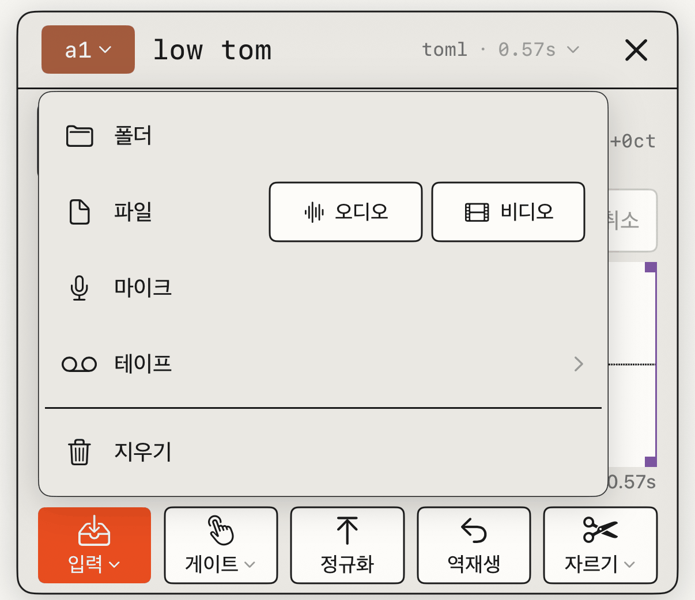
믹스하기
믹스에는 fx 1 · fx 2 · 믹스 · eq 탭 네 개가 있습니다.
채널 스트립
믹스에는 트랙마다 스트립이 하나씩 있고, 모두 한 화면에 들어갑니다.
입력은 소스 하나만 녹음할 때의 입력 게인입니다.팬은 트랙을 왼쪽이나 오른쪽에 둡니다.sd1과sd2는 트랙을fx 1과fx 2로 보냅니다.- 페이더에는 레벨 미터가 붙어 있고,
m은 트랙을 뮤트합니다.
스트립 위의 드라이브는 믹스 전체를 −12에서 +12 dB 범위로 리미터 쪽으로 밀어붙입니다. 올릴수록 소리가 더 단단하게 조여집니다.
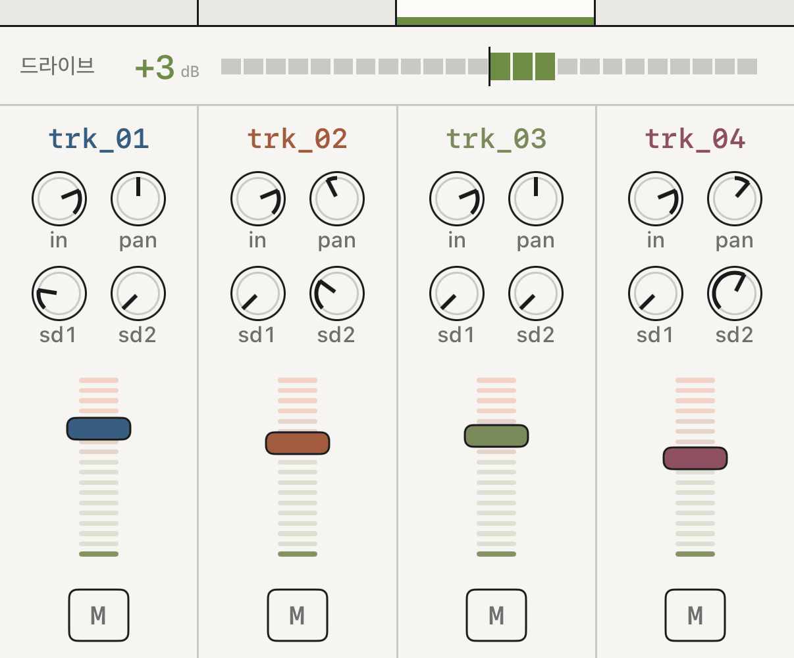
드라이브가 있는 믹스의 스트립.이펙트
fx 1과 fx 2는 공유 이펙트 두 개이고, 각 트랙은 sd1과 sd2로 보냅니다. 빈 버스를 누르면 테이프샛 · 딜레이 · 리버브 · 크러시 · 안개 · 흔들림 · 반짝임 가운데 하나를 고르거나, 플러그인으로 다른 앱의 AUv3를 쓸 수 있습니다.
이펙트마다 00에서 99까지의 노브가 네 개 있습니다. 세로로 끌어서 움직이고, 두 번 누르면 기본값으로 돌아갑니다. 위의 활성은 설정을 잃지 않고 이펙트를 끄고, 리턴은 이펙트 레벨을 정하고, 변경은 다른 이펙트로 바꿉니다.
대부분의 이펙트는 트랙에 더해지고, 트랙 소리는 그대로 들립니다. 크러시, 안개, 흔들림은 원래 소리를 대체합니다. 센드를 올릴수록 원래 소리가 줄고, 센드를 끝까지 올리면 이펙트만 들립니다.
연주하는 동안에는 녹음 대기 트랙이 이펙트를 거쳐 들립니다. 테이크는 이펙트 없이 녹음됩니다.
모든 노브는 믹스 이펙트 자료에 있습니다.
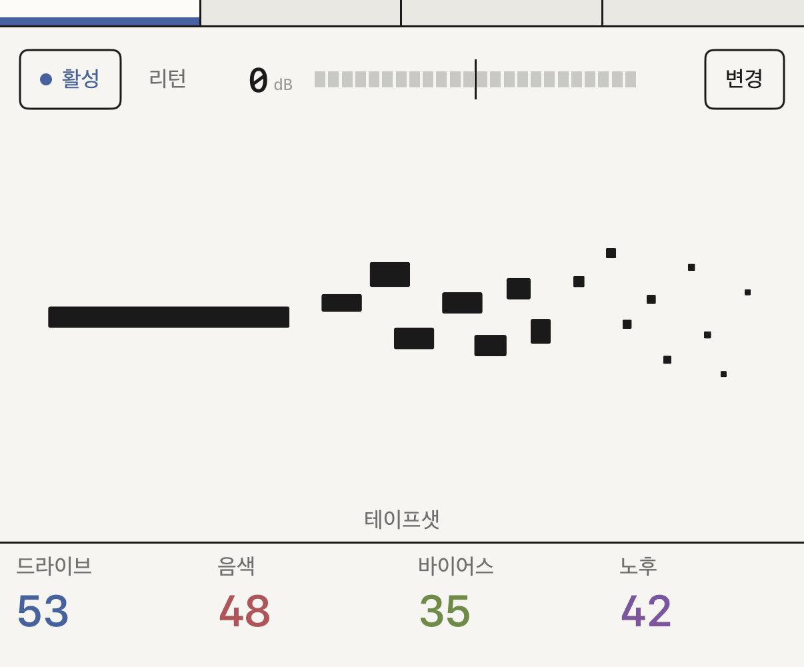
테이프샛과 노브 네 개가 있는 fx 1.다른 앱의 플러그인
버스에서 플러그인을 고르면 설치된 AUv3 이펙트가 제조사별로 나옵니다. ui 열기는 플러그인 화면을 열고, iPad에서는 크기를 바꿀 수 있는 떠 있는 창으로 나옵니다. 템포는 저절로 맞춰지고, 플러그인 상태는 테이프와 함께 저장됩니다.
마스터 EQ
eq는 화면 가득 나오는 곡선이고, 고정된 밴드 네 개 저음 150 Hz · 두께 400 Hz · 존재감 2.5 kHz · 공기감 8 kHz가 있습니다. 밴드를 위아래로 끌어 최대 8 dB까지 움직이고, 두 번 누르면 평평해집니다.
두 손가락을 벌리거나 오므리면 네 밴드가 함께 커지거나 작아집니다. 칩 하나로 eq 전체를 끌 수 있고, 곡선은 그대로 남습니다.
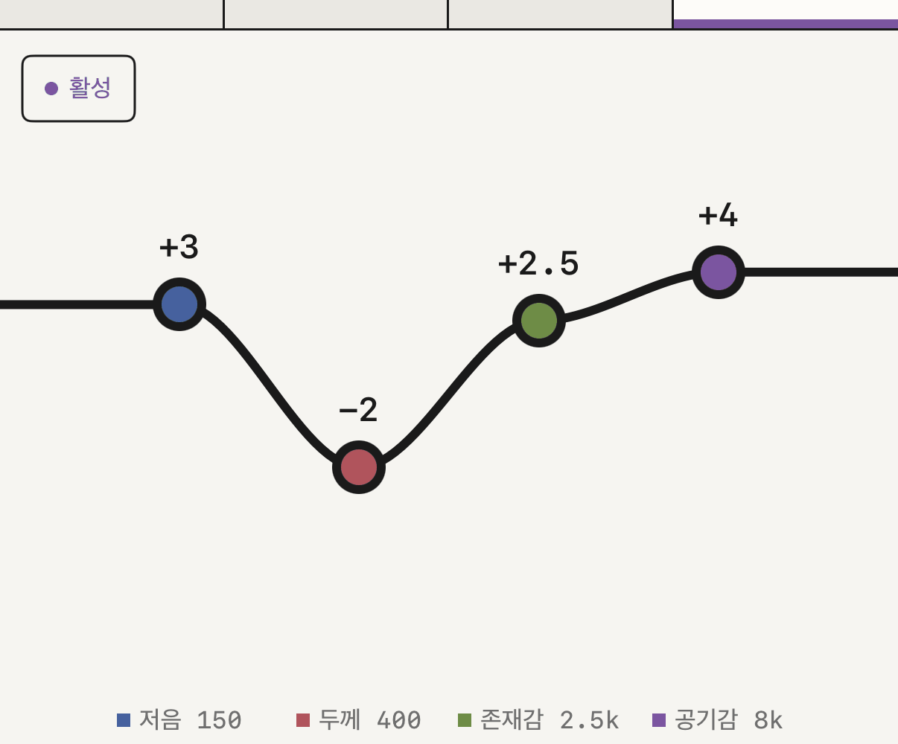
소리가 지나가는 길
각 트랙은 자기 스트립과 센드를 지납니다. 그다음 모두 합쳐져서 드라이브, eq, 리미터를 거쳐 나가므로, eq에서 올린 만큼 리미터 쪽으로도 밀립니다.
테이프와 내보내기
프로젝트 하나가 테이프 하나입니다.
내 테이프
헤더의 프로젝트를 누르면 테이프가 열립니다. 여기서 새 테이프를 만들고, 각 테이프의 줄에서 복제, 이름 변경, 삭제를 합니다. 삭제는 확인을 거치며 되돌릴 수 없습니다.
테이프에는 트랙과 믹스, 템포, 박자표, 루프 지점, 이펙트가 저장됩니다. 새 테이프는 120 BPM으로 시작하고, 트랙 수는 트랙에서 정한 값을 따릅니다.
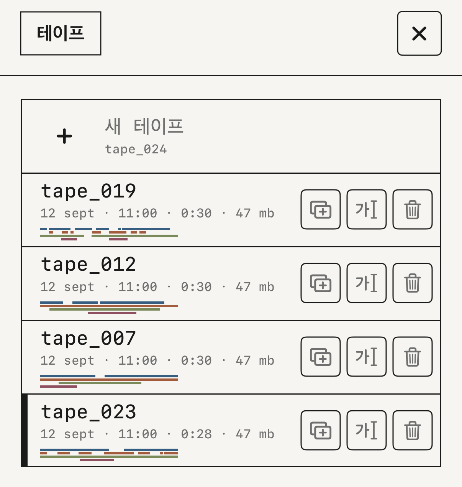
내보내기
헤더의 꺼내기 아이콘을 누릅니다. 패널에서 세 가지를 고릅니다.
출력은 믹스 전체인마스터또는 트랙마다 파일 하나씩인스템입니다.포맷은wav(24비트, 무손실) 또는m4a(압축)입니다.범위는테이프전체 또는루프한 바퀴입니다.
꺼내기를 누르면 iOS 공유 시트로 파일이 나가고, 파일 앱, AirDrop, 다른 앱으로 보낼 수 있습니다.
내보낸 소리는 재생할 때와 똑같습니다. 마스터에서는 뮤트한 트랙이 들리지 않고 리미터가 적용됩니다. 스템에서는 트랙이 뮤트되어 있어도 파일마다 오디오가 온전히 들어가고, 드라이브와 eq는 적용되지만 리미터는 거치지 않습니다.
테이프가 리버브나 딜레이의 꼬리로 끝나면 최대 12초가 더 내보내집니다. 루프에서는 그 꼬리 가운데 최대 2초가 앞부분에 겹쳐져서, 한 바퀴가 끊김 없이 이어집니다.
신스는 트랙에 녹음한 뒤에야 내보내기에 들어갑니다. 신스 녹음하기를 보세요.
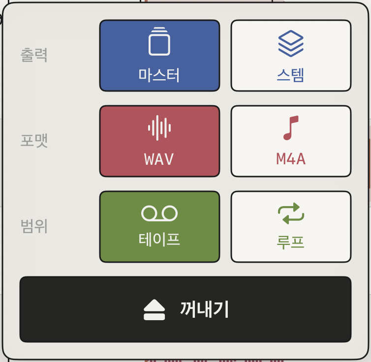
꺼내기 버튼.다른 앱과 함께
템포 맞추기
설정 ▸ 싱크에는 템포를 공유하는 방법이 두 가지 있습니다.
midi 클럭은 출력으로 내 템포를 보내거나 입력으로 다른 기기의 템포를 따라가며, 시작과 정지도 함께 주고받습니다. USB, Bluetooth, 네트워크로 동작합니다.
link는 Ableton Link 패널을 열어, 같은 네트워크에 있는 다른 앱과 템포를 맞춰 연주하게 해 줍니다. link가 켜져 있는 동안 midi 클럭은 꺼지고 잠깁니다.
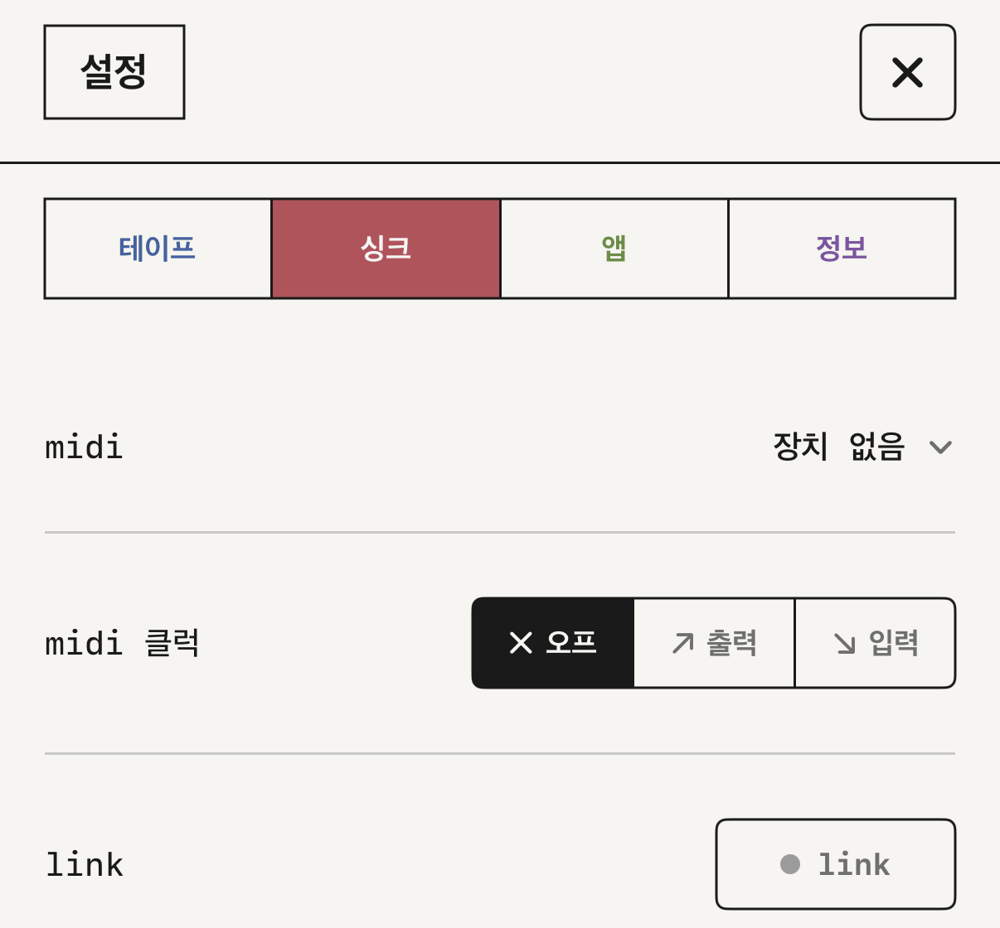
midi 클럭과 link.MIDI 러닝
학습을 쓰면 컨트롤러의 노브를 트랜스포트, 페이더, 팬, 센드, 뮤트, 이펙트 노브, eq 밴드 등 앱의 거의 모든 컨트롤에 연결할 수 있습니다.
설정 ▸ 싱크 ▸ midi에서 켜면 연결할 수 있는 컨트롤마다 set 플레이트가 나타납니다. 플레이트를 누르고 실제 노브를 움직이면 연결됩니다. 끝나면 완료를 누릅니다.
신스의 매크로와 프리셋 넘기기도 연결할 수 있습니다.
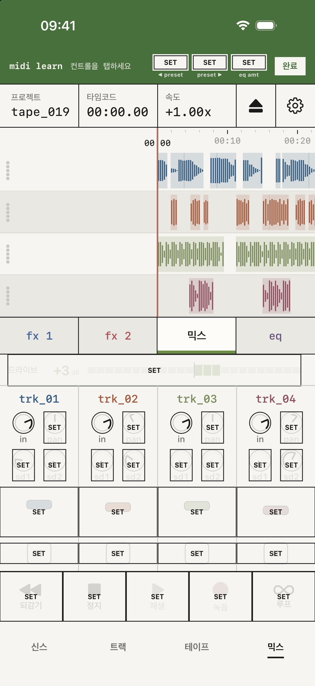
학습을 켜서 믹스 위에 플레이트가 올라온 상태.플러그인으로 쓰는 TapeDesk
TapeDesk는 다른 앱 안에서 AUv3 플러그인으로도 열립니다. TapeDesk: Tape는 믹스가 딸린 테이프이고, 그 안의 테이프는 앱에서 보는 테이프와 같습니다.
위쪽의 클럭에는 선택지가 두 가지 있습니다.
host가 기본값입니다.대기를 누르면 호스트의 재생과 함께, 호스트의 템포로 녹음이 시작됩니다.테이프는 트랜스포트 전체와 자체 템포를 줍니다.
host에서도 테이프를 옮길 수 있습니다. 원하는 곳까지 끌고 가서 놓으면, 그 지점에서부터 호스트에 맞춰 시작하고 멈춥니다. 타임라인이 없고 0으로 돌아가지 않는 클립형 호스트에서 쓸모가 있습니다. 테이프로 바꿨다가 host로 돌아오면 테이프는 다시 호스트를 따라갑니다.
소스를 쓰면 플러그인이 호스트의 입력을 최대 여섯 개까지 받아 각각 지정한 트랙에 넣고, 모두 동시에 녹음합니다. 루프와 임계값에서도 됩니다. 통과는 호스트의 입력을 출력으로 들려줍니다. 호스트는 믹스 전체를 오토메이션할 수 있습니다.
TapeDesk: Tape.TapeDesk: Play 그루브박스
TapeDesk: Play는 신스를 다른 앱 안의 악기로 쓰는 플러그인입니다. 호스트에서 노트, 서스테인, 피치 벤드를 받고, 오토메이션할 수 있는 파라미터 37개를 내놓습니다.
소리는 호스트의 세션과 함께 저장됩니다. 프리셋, 스케일, DX 카트리지는 앱과 같습니다.
TapeDesk: Play.자료
이 부분은 찾아볼 때 씁니다. 모든 엔진과 이펙트의 노브, 설정, 용어 색인, 라이선스가 있습니다.
엔진 그루브박스
합성 엔진 11개는 Émilie Gillet(Mutable Instruments)의 Plaits를 바탕으로 만들어졌습니다. 샘플과 kit는 샘플을 연주합니다.
drift
아날로그 보이스 무리, 스테레오
흔들림- 멈춰 있는 무리에서 계속 변하는 구름까지
무리- 보이스 수
개화- 가운데 쪽 디튠
퍼짐- 양옆 쪽 디튠, 올릴수록 스테레오가 넓어짐
poly
버추얼 아날로그
파형- 따뜻한 소리에서 하드 싱크처럼 물어뜯는 소리까지
두께- 톱니파의 두께
음색- 밝기
보이스- 보이스마다의 음정 간격, 유니즌, 5도, 옥타브, 옥타브와 5도
fold
웨이브 폴딩
폴딩- 폴딩 양
파형- 출발 파형
뒤틀림- 아래는 따뜻하고 위는 금속성
움직임- 폴딩을 숨 쉬듯 움직이는 느린 LFO
fm
2오퍼레이터 FM
변조량- 사인파에서 종소리, 금속성 충돌음까지
비율- 오퍼레이터 사이의 간격, 단계별로 바뀜
날카로움- 피드백, 깨끗한 소리에서 윙윙거리는 소리까지
부풂- 어택 뒤에 소리를 부풀림
pluck
뜯는 현, 저절로 잦아듦
뜯기- 뜯는 소리의 밝기
감쇠- 울림의 길이
음색- 따뜻한 소리에서 금속성까지
몸통- 울림통의 공명
mallet
음정이 있는 타악기, 저절로 잦아듦
타격- 치는 세기
여운- 울림의 길이
음색- 어두운 소리에서 금속성까지
반짝임- 높은 배음의 밝기
wave
웨이브테이블
스캔- 테이블 안의 위치
파형- 파형 계열
양자화- 깨끗한 소리에서 로파이까지
변화- 테이블을 저절로 훑음
cz
페이즈 디스토션
피크- 레조넌스의 깊이
파형- 창의 모양
배음- 레조넌스의 배음, 단계별로 바뀜
스윕- 노트마다 포먼트를 훑음
ensemble
스트링 머신, 스테레오
앙상블- 코러스 양
음역- 톱니파에서 사각파까지
공기감- 음높이에 따라 필터가 열리는 정도
비브라토- 노트마다 걸리는 비브라토
noise
노이즈와 텍스처
거친결- 바스락거리는 계단에서 히스까지
피크- 필터 레조넌스
색감- 로우패스, 밴드패스, 하이패스
돌풍- 노트마다 한 번도 반복되지 않는 돌풍
dx
6오퍼레이터 FM, 저절로 잦아듦
패치- 뱅크에 든 32개 패치 중 하나
변조- 패치 LFO의 깊이
밝기- 밝기
늘림- 엔벨로프를 늘이거나 줄임
.syx 카트리지는 dx 카트리지의 .syx 가져오기로 불러옵니다.
sample
건반 샘플러
노트- 샘플의 실제 음높이
파형을 눌러 잘라 내고 루프 구간을 정합니다.
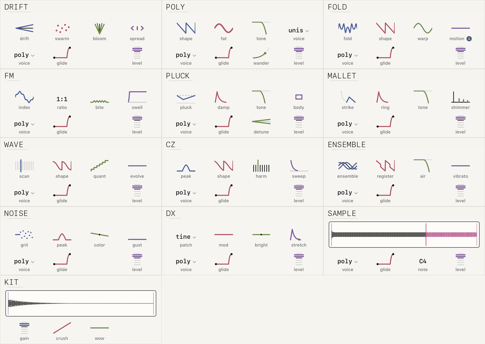
엔진 이펙트 그루브박스
엔진마다 이펙트 탭에 전용 이펙트가 하나 있고, 소리 안쪽에서 노트마다 동작합니다.
코러스
레이트- 속도
깊이- 깊이
반복- 피드백, 음수에서는 속이 빈 소리, 양수에서는 공명하는 소리
보이스- 보이스 1~4개
딜레이- 기본 지연 시간, 짧으면 반짝이고 길면 비브라토처럼 들림
폭- 스테레오 폭
믹스- 믹스
드라이브
테이프샛과 같은 엔진
게인- 새추레이션 양, 음량은 보정됨
음색- 새추레이션 뒤의 필터
바이어스- 비대칭
엣지- 더 강한 새추레이션
성격- 또 하나의 비대칭 조절
믹스- 믹스
출력- 출력 레벨, ±12 dB
페이저
레이트- 스윕 속도
깊이- 스윕 폭
반복- 레조넌스, 공기 같은 소리에서 목소리 같은 소리까지
단수- 2~12단
중심- 스윕의 중심
퍼짐- 왼쪽과 오른쪽 사이의 위상 차이
믹스- 노치가 얼마나 뚜렷하게 들리는지
딜레이
믹스의 딜레이와 같은 엔진
시간- 최대 1.2초,
싱크를 켜면 템포 분할 반복- 반복 횟수
음색- 반복될 때마다 어두워짐
핑퐁- 반복을 왼쪽과 오른쪽으로 번갈아 보냄
싱크시간을 템포에 맞춤변조- 테이프처럼 흔들림
믹스- 믹스
공간
믹스의 리버브와 같은 엔진
크기- 크기
디케이- 꼬리의 길이
감쇠- 고음이 사라지는 방식
음색- 밝기
변조- 스프링의 반짝이는 울림
믹스- 믹스
더티
퍼즈
게인- 퍼즈로 들어가는 입력
폴딩- 웨이브 폴딩
바이어스- 한쪽은 퍼즈가 더 강하게, 다른 쪽은 조용하게
크러시- 샘플레이트를 300 Hz까지 낮춤
음색- 크러시 뒤의 필터
믹스- 믹스
출력- 출력 레벨, ±12 dB
au
다른 앱의 AUv3 이펙트
리턴- 이펙트 레벨, ±12 dB
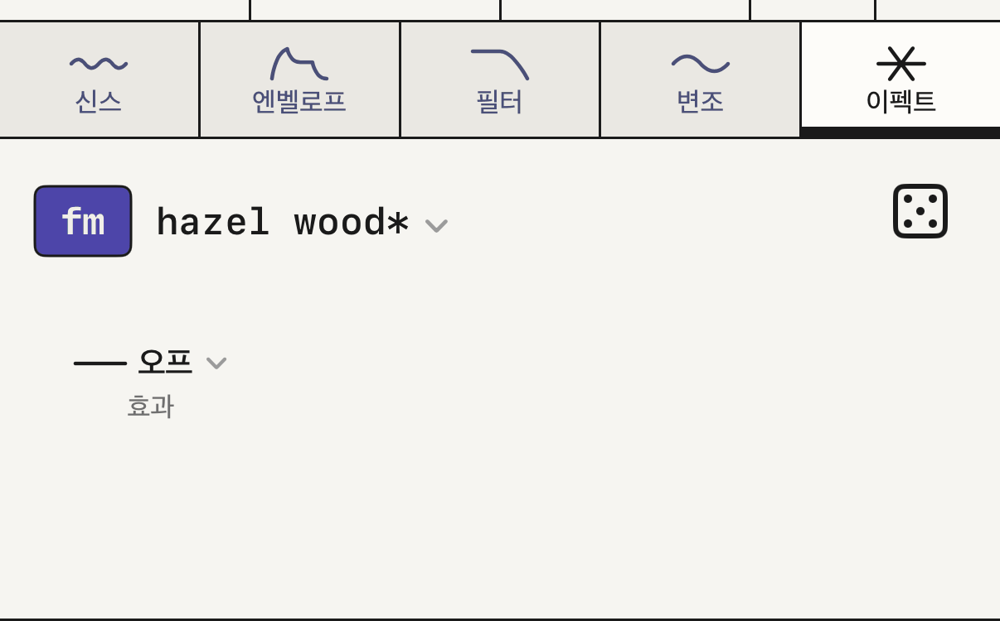
공간을 불러온 이펙트 탭.믹스 이펙트
fx 1과 fx 2에 불러오는 이펙트입니다.
테이프샛
테이프 새추레이션, 더해짐
드라이브- 신호를 테이프 쪽으로 얼마나 밀어붙이는지, 음량은 보정됨
음색- 고음 감쇠, 200 Hz~20 kHz
바이어스- 비대칭, 짝수 배음을 더함
노후- 새 테이프에서 낡은 카세트까지, 히스가 먼저 오고 그다음 와우
딜레이
테이프 에코, 더해짐
시간- 30~750 ms. 움직이면 에코가 미끄러지듯 따라감
반복- 반복 횟수
음색- 반복될 때마다 어두워짐
와우- 지연 시간의 흔들림
리버브
피드백 라인 8개, 더해짐
디케이- 꼬리의 길이
음색- 공간의 밝기
물방울- 스프링의 반짝이는 울림
감쇠- 꼬리에서 고음이 사라지는 방식
크러시
샘플레이트와 비트를 낮춤, 대체함
레이트- 48 kHz~1.5 kHz
비트- 16~3비트
거친결- 계단 모양에서 노이즈까지
음색- 고음 필터
안개
움직이는 필터, 대체함
주파수- 출발 컷오프, 80 Hz~8 kHz
움직임- 왼쪽은 신호가, 오른쪽은 LFO가 움직임
레조- 레조넌스, 끝 가까이에서 발진
파형- 로우패스에서 밴드패스, 페이저까지
free에서는 LFO가 0.1~8 Hz로 돕니다. sync에서는 템포를 따릅니다.
흔들림
테이프 흔들림, 대체함
깊이- 음정이 흔들리는 정도
레이트- 0.1~8 Hz
파형- 사인파에서 무작위 움직임까지
드롭- 레벨과 고음이 떨어지는 드롭아웃
반짝임
옥타브가 섞인 리버브, 더해짐
반짝임- 옥타브가 다시 들어오는 양
크기- 꼬리의 길이
음색- 밝은 소리에서 어두운 소리까지
개화- 구름이 피어오르는 데 걸리는 시간
아래에서 음정 간격을 −12에서 +12까지 고릅니다. 기본값은 +12입니다.
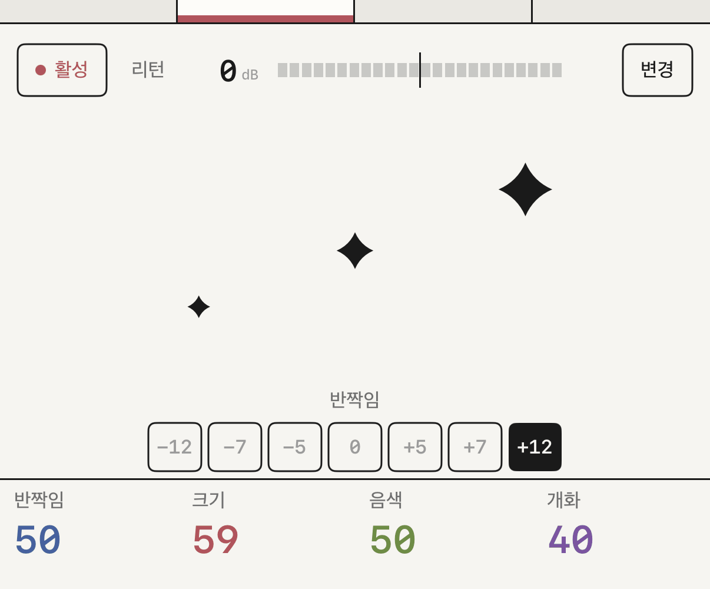
반짝임.설정
헤더의 톱니바퀴가 설정을 엽니다. 탭은 네 개입니다.
테이프
트랙- 테이프의 트랙 수, 4~6개
tempo- 휠로 돌리거나 탭해서 입력
박자표- 테이프의 박자표
카운트인- 녹음 전 카운트
메트로놈- 클릭을 켬
녹음 모드더빙또는교체편집 바- 편집 바를 여는 제스처
리전- 테이크를 그리는 방식
싱크
midi- 기기,
학습,채널,seq,출력 오프셋,무선,패닉 midi 클럭오프·출력·입력link- Ableton Link를 엶
앱
모드레코더또는그루브박스테마라이트·다크·자동벨로시티- 건반과 패드를 칠 때 타격이 얼마나 반영되는지, 0~5
언어- 15개 언어, 바로 바뀜
마이크- 권한 상태
음질스튜디오는 24비트로,데모는 16비트로 녹음하며 용량이 더 적음저장 공간- TapeDesk가 차지하는 용량
앱 아이콘- cream · dark · olive · wine
정보
데이터 수집 안 함- 개인정보 처리방침으로 연결
설명서- 이 매뉴얼을 엶
레이트- 앱 평가하기
지원- 문의 보내기
맨 아래에 버전과, 소리와 Plaits의 크레디트가 있습니다.
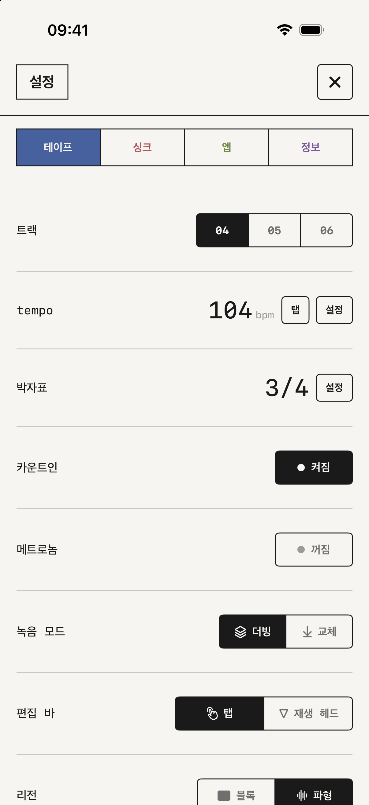
테이프싱크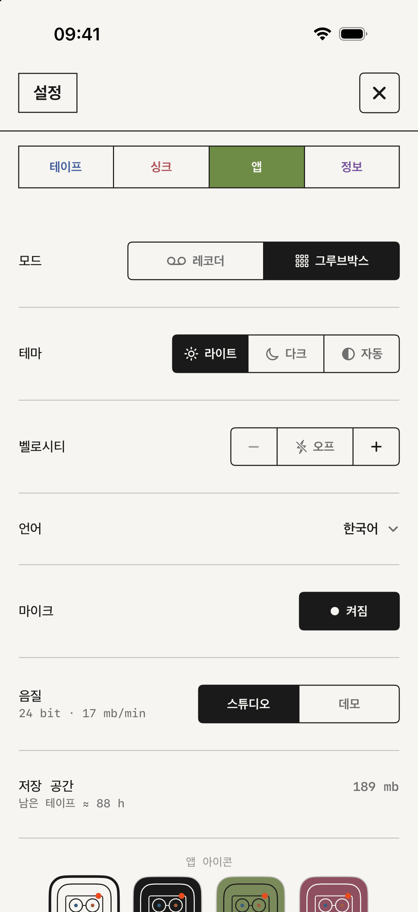
앱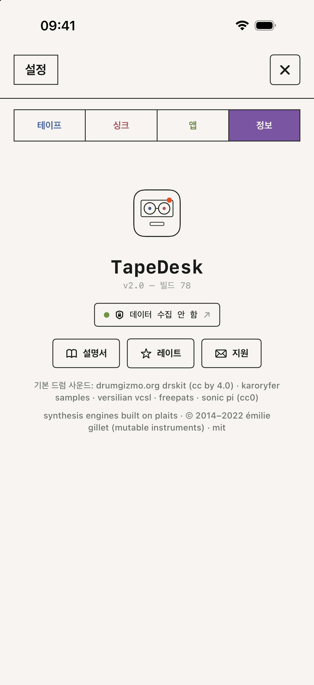
정보용어 색인
au· 다른 앱의 플러그인eq· 마스터 EQfx 1과fx 2· 이펙트kit· Kitlink· 템포 맞추기midi 클럭· 템포 맞추기safe· 여러 입력을 한 번에 녹음하기TapeDesk: Play· TapeDesk: PlayTapeDesk: Tape· 플러그인으로 쓰는 TapeDeskui 열기· 다른 앱의 플러그인- USB 오디오 인터페이스 · 여러 입력을 한 번에 녹음하기
←결합과결합→· 편집 바건반· 건반교체· 녹음 대기와 녹음그루브박스· 두 가지 모드꺼내기· 내보내기녹음· 녹음 대기와 녹음녹음 모드· 녹음 대기와 녹음더빙· 녹음 대기와 녹음되감기· 테이프 안에서 움직이기드라이브· 채널 스트립드롭· 편집 바레코더· 두 가지 모드루프· 루프, 라이브 루퍼리턴· 이펙트리프트· 편집 바마스터· 내보내기믹스· 채널 스트립바운스· 두 트랙을 하나로 바운스변경· 이펙트소스· 신스 녹음하기, 여러 입력을 한 번에 녹음하기, 플러그인으로 쓰는 TapeDesk소스 → 트랙· 여러 입력을 한 번에 녹음하기속도· 속도스템· 내보내기스텝· 시퀀서시퀀서· 시퀀서신스· 소리 고르기실행 취소· 트랙실행취소와다시실행· 편집 바아르페지· 시퀀서역재생· 편집 바- 오디오 인터페이스 · 여러 입력을 한 번에 녹음하기, 오디오가 들어오는 곳
유칼립투스· 유칼립투스- 임계값 · 저절로 시작하는 테이크
입력· 채널 스트립재생· 첫 테이크정규화· Kit정지두 번 · 녹음 대기와 녹음찹· Kit카운트인· 녹음 대기와 녹음코드· 코드클럭· 플러그인으로 쓰는 TapeDesk테이프· 내 테이프통과· 플러그인으로 쓰는 TapeDesk트랙· 트랙- 트랙별 소리 · 트랙별 소리
프로젝트· 내 테이프프린트· 유칼립투스플러그인· 다른 앱의 플러그인핑· 시퀀서학습· MIDI 러닝활성· 이펙트
라이선스
kit의 기본 소리는 DrumGizmo.org DRSKit(CC BY 4.0), Karoryfer Samples, Versilian VCSL, FreePats, Sonic Pi(CC0)에서 왔습니다.
합성 엔진 11개는 Émilie Gillet(Mutable Instruments)의 Plaits를 바탕으로 만들어졌고, MIT 라이선스를 따릅니다. Copyright 2014-2022 Émilie Gillet. 라이선스 본문을 프로그램과 함께 배포하라는 조건이 있어서 여기에 싣습니다.
Permission is hereby granted, free of charge, to any person obtaining a copy of this software and associated documentation files (the "Software"), to deal in the Software without restriction, including without limitation the rights to use, copy, modify, merge, publish, distribute, sublicense, and/or sell copies of the Software, and to permit persons to whom the Software is furnished to do so, subject to the following conditions:
The above copyright notice and this permission notice shall be included in all copies or substantial portions of the Software.
THE SOFTWARE IS PROVIDED "AS IS", WITHOUT WARRANTY OF ANY KIND, EXPRESS OR IMPLIED, INCLUDING BUT NOT LIMITED TO THE WARRANTIES OF MERCHANTABILITY, FITNESS FOR A PARTICULAR PURPOSE AND NONINFRINGEMENT. IN NO EVENT SHALL THE AUTHORS OR COPYRIGHT HOLDERS BE LIABLE FOR ANY CLAIM, DAMAGES OR OTHER LIABILITY, WHETHER IN AN ACTION OF CONTRACT, TORT OR OTHERWISE, ARISING FROM, OUT OF OR IN CONNECTION WITH THE SOFTWARE OR THE USE OR OTHER DEALINGS IN THE SOFTWARE.